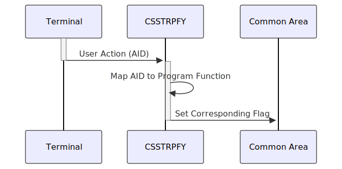

Gerado em: 1 de outubro de 2024
Documento de Título: Especificação do Tradutor de Ação do Usuário CICS
Descrição Resumida:
Este programa traduz ações do usuário, como teclas pressionadas em um terminal, em funções de programa correspondentes dentro de um aplicativo CICS. Ele atua como uma ponte entre a interface do usuário e a lógica do aplicativo, garantindo que as entradas do usuário sejam interpretadas e processadas corretamente.
Histórias de Usuário:
Como desenvolvedor de aplicativos CICS, preciso de uma maneira de capturar e interpretar as ações do usuário no terminal para que o aplicativo possa responder adequadamente às solicitações do usuário.
Epic Relacionado:
9 - Utilitários do Sistema
Requisitos Técnicos:
- Captura de Ação do Usuário: O programa captura ações do usuário, como teclas pressionadas (incluindo teclas de função) e outras entradas específicas do terminal, usando a variável do sistema
EIBAID.
- Mapeamento de Ação: O programa mapeia ações do usuário capturadas (AIDs) para funções de programa predefinidas usando uma série de instruções condicionais (
EVALUATE TRUE, WHEN).
- Configuração de Sinalizador: Em vez de executar funções do programa diretamente, o programa define sinalizadores correspondentes em uma área de memória compartilhada (área comum) para indicar a intenção do usuário. Essa abordagem permite flexibilidade no tratamento de ações do usuário e desacopla a interface do usuário da lógica do aplicativo.
- Acesso à Área Comum: O programa requer acesso a uma área comum predefinida para armazenar e recuperar sinalizadores que representam ações do usuário. A área comum específica e os nomes dos sinalizadores devem ser definidos na arquitetura do aplicativo.
Modelos Relacionados:
Configurações:
EIBAID: Variável do sistema que contém o Identificador de Atenção (AID) da última ação do usuário.CCARD-AID-ENTER: Sinalizador na área comum que representa o pressionamento da tecla “Enter”.CCARD-AID-CLEAR: Sinalizador na área comum que representa o pressionamento da tecla “Clear”.CCARD-AID-PA1: Sinalizador na área comum que representa o pressionamento da tecla “PA1”.CCARD-AID-PA2: Sinalizador na área comum que representa o pressionamento da tecla “PA2”.CCARD-AID-PFK01 a CCARD-AID-PFK12: Sinalizadores na área comum que representam as teclas de função “PF1” a “PF12”.
Melhorias de Código:
- Tratamento de Erros: Implemente um tratamento de erros robusto para gerenciar AIDs inesperados ou problemas ao acessar a área comum. Isso pode incluir registrar o erro, exibir uma mensagem amigável ao usuário ou acionar um processo de recuperação.
- Log: Aprimore os recursos de log para registrar todas as ações do usuário e suas traduções correspondentes. Essas informações podem ser valiosas para depuração, auditoria e compreensão do comportamento do usuário.
- Flexibilidade de Configuração: Considere permitir mapeamentos configuráveis de AID para função. Isso pode ser implementado usando um arquivo de configuração ou tabela, permitindo a personalização sem modificar o código do programa.
Melhorias de Segurança:
- Validação de Entrada: Implemente validação rígida para os AIDs recebidos para evitar comportamento inesperado ou vulnerabilidades de segurança.
- Acesso Seguro à Área Comum: Garanta que o acesso à área comum seja adequadamente restrito para evitar modificações não autorizadas de sinalizadores ou corrupção de dados.
Diagrama Conceitual:

–Made by “Smart Engineering” (by Compass.UOL)–